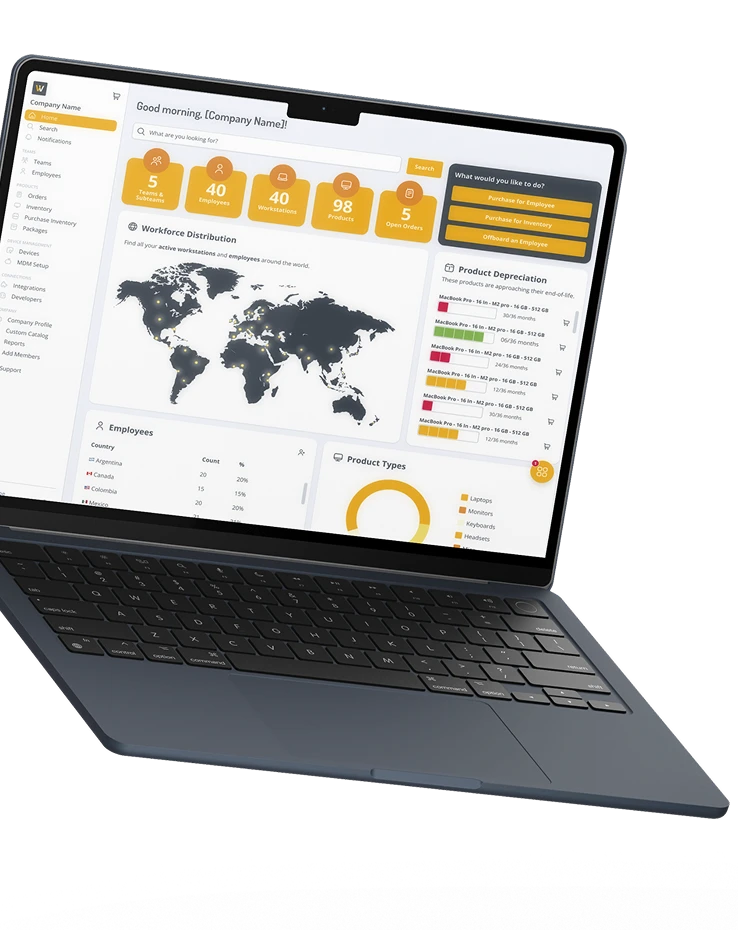

GroWrk Remote
Optimizando el trabajo remoto global mediante sistemas de diseño escalables que mejoran la eficiencia y la experiencia del usuario.
Soy diseñador de producto con base en Monterrey, México 🇲🇽, y tengo más de 10 años de experiencia en UX/UI creando productos digitales. Me apasiona ayudar a las personas a través del diseño y siempre busco nuevas formas de aprender, crecer y crear mejores experiencias.
Optimizando el trabajo remoto global mediante sistemas de diseño escalables que mejoran la eficiencia y la experiencia del usuario.

Desarrollo de una app financiera escalable, accesible y centrada en el usuario para ampliar el acceso a servicios financieros en México.
Diseño de plataformas accesibles y fáciles de usar para la gestión de beneficios de empleados, mejorando la experiencia y participación del usuario.
Diseño de un ecosistema de lealtad para múltiples marcas, impulsando la fidelización del cliente a través de experiencias digitales conectadas.
Actualmente estoy aceptando nuevos proyectos y me encantaría conocer el tuyo. No dudes en compartir todos los detalles posibles: alcance, tiempos y presupuesto.